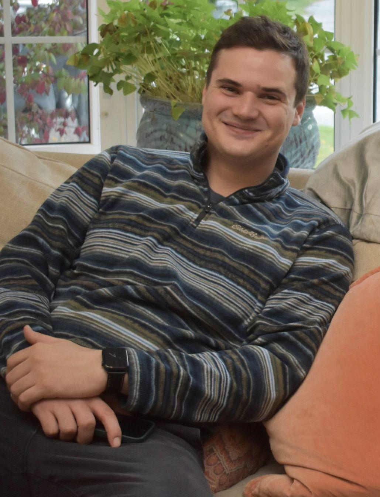

Celebrating a life well lived — and the legacy that lives on through community, sport, and giving back.
Tyler Greer's warmth, energy, and love for life touched everyone around him. This memorial tournament was created to honour his memory and bring together the community who loved him.
Tyler's spirit lives on through the things he cared about most: connection, sport, and giving back. The First Annual Tyler Greer Memorial Golf Tournament is our way of celebrating his legacy while making a meaningful difference together.
Net proceeds from the first annual Tyler Greer Memorial Golf Tournament will go to CAMH.
